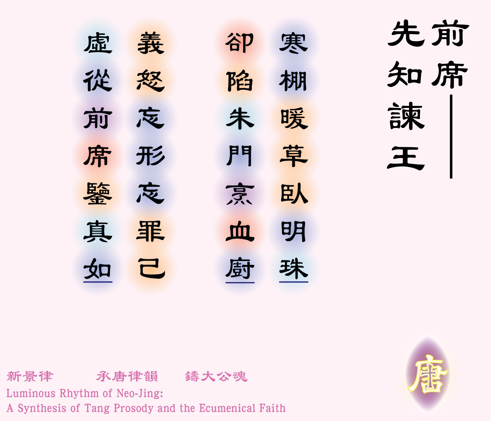

![[如果未顯示圖片，請確認 圖例_2-01.jpg 已放入同資料夾]](圖例_2-01.png)

寒棚暖草臥明珠 [1]* 明珠：指貧牧人的小母羊，中文裡常用「掌上明珠」表示愛女的意思，也呼應〈撒下：12:3〉裡「待牠如同自己的女兒一樣」。，卻陷朱門烹血廚 [2]* 朱門：泛指富貴人家。！
義怒忘形忘罪己 [3]* 罪己：中國古代的帝王在重大的天災人禍後，公開向臣民承認過失。，虛從前席鑒真如 [4]* 前席：移前座位，靠近而坐的意思，典出唐朝李商隱詩作《賈生》，詩曰：
宣室求賢訪逐臣，賈生才調更無倫。
可憐夜半虛前席，不問蒼生問鬼神。
詩中講述漢文帝深夜拜訪名士賈誼，與賈誼促膝詳談，可是皇帝關心的並非安民治國之道，而是鬼神迷信之說。
** 鑒：照鏡的意思。靈感來自唐太宗名言：「以銅為鏡，可以正衣冠；以古為鏡，可以知興替；以人為鏡，可以明得失。」，見《舊唐書．魏徵列傳》。
*** 真如：佛教術語，指事物真實的本質。在詩中可解作達味王自己本真的良心，又可解作真神（天主）的正義。。
體裁：七言粵語絕句（平起首句入韻）
韻部：現代粵語．Yu
創作日期：二零二六年三月十八日